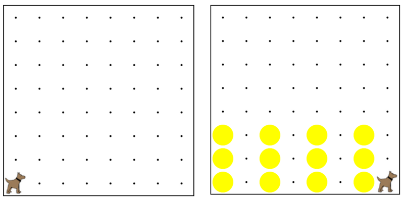

Karel starts at 1st street and 1st avenue. Your job is to build a
tower (a stack of 3 tennis balls) on all of the odd avenues in the world.
i.e. 1st, 3rd, 5th, 7th, etc.
卡雷爾開始於第一街和第一大道。你的工作是對所有在世界上奇怪的途徑建立一個塔（一摞3網球）。
即第1，第3，第5，第7，等等。
This must work on any sized world, so there could only be 1 avenue or
there could be 100 avenues, and it should still build a tower on every odd avenue.
這必須工作在任何大小的世界，所以只能有1路或有可能是100渠道，它仍然應該對每個奇大道建立一個塔。
